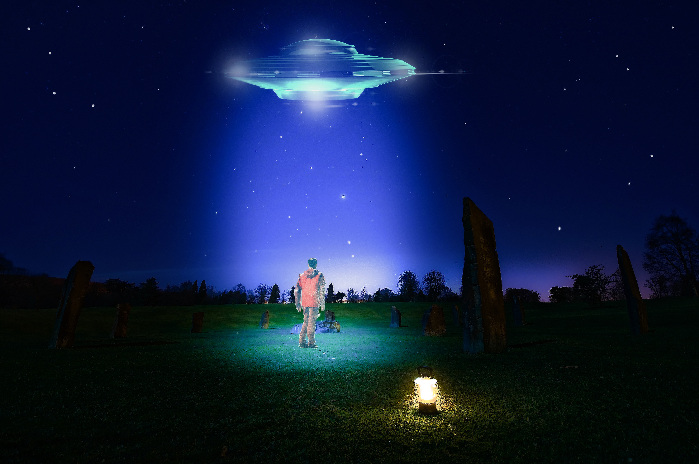
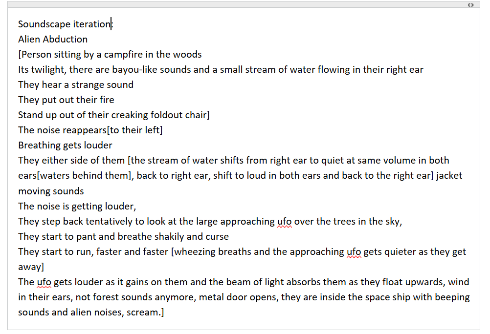
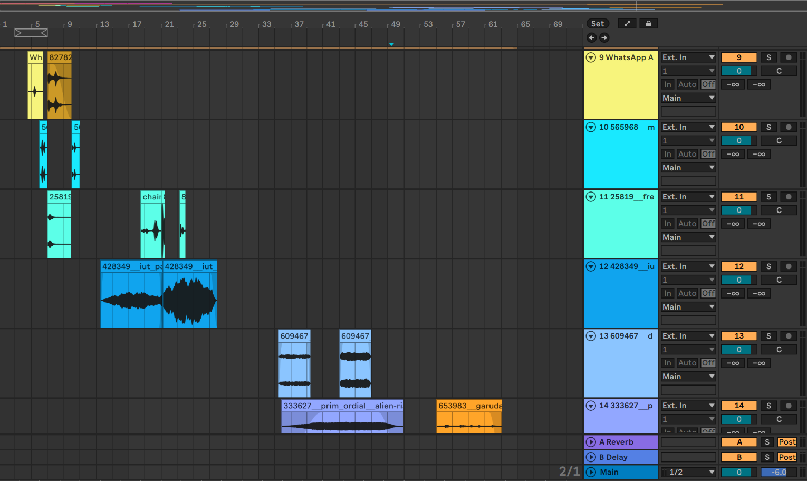

Audio production
Soundscape: Alien Abduction
This audio piece tells the story of a man having a very unusual night camping!

Description
This work is a piece of audio story-telling, using sound effects and foley by myself and some artists online. The piece immerses the listener in the perspective of a man who is camping in the woods, and notices an alien spacecraft. The ending is intended to be up to interpretation! Created in Ableton Live, the mosaic of audio pieces blend seamlessly to bring you into another world!
Motivation
I created this particular work for a multitude of reasons. As I have grown familiar with the Ableton Live software, I have developed a huge interest in audio as an art form and a means of storytelling. I chose something unconventional and sci-fi themed to experiment with a range of audio techniques and ways to blend natural and artificial sounds. Exploring perspective was another motivator, as I find that playing around with it can tell stories from interesting angles. I leave the question to the listener at the end, was the man abducted or did he escape? Depending on your interpretation of the listening perspective, this will change.
Design process
I usually begin my projects with a flash of inspiration that I write down as quick as it comes to me, or brainstorming where I actively search for ideas. In this case, I noticed that a step on my stairs sounded like an alien sound effect, and I thought, that would make an interesting soundscape! I always plan my projects in detail before starting, and I have included the first iteration of the script I had for this project in the prototype section below.
I created a scene descriptor for myself to imagine the area it would take place in, as I find it hard to capture an accurate and immersive atmosphere without vividly imagining where this soundscape might take place. Description: A dark forest in winter, near a town with faint hums of traffic traelling through the cold air. A man is sitting beside his warm campfire, keeping close to stay warm. An alien spacecraft as portrayed in popular media is typically large, spinning, and high in the sky, and would be slightly muffled by clouds and leaves as it approaches. The forest ground must be covered in rotting, crunchy leaves if it is Winter.
I created a short, simplified soundscape in order to get an idea of how it would sound and asked two of my peers for feedback. Further information on this feedback is provided below! In this stage I also experimented with creating different sounds. An example of a sound I created for this piece: I recorded audio of myself using my phone microphone, standing from a creaky chair to emulate the sound of someone getting up from a camping chair, and recorded timed footsteps on paper to simulate the man standing up on the leafy ground in shock to look around him. I kept this sound in the final version as well.
Prototypes


Feedback
Reflection
Overall, I really enjoyed the process of creating the soundscape. My method for prototyping and creating a descriptor of the environment made it significantly easier to place myself in that world, and feel around the different sensory aspects of it. This enabled me to bring it to life for a listener. If I had to start this project again however, I would be more inclined to conduct the field recordings myself if I had the opportunity. Being physically present in these types of project recordings, where the goal is immersive storytelling, allows you to vividly envision your imaginary world, and find ways to make it more tangible to a listener. You would also have more control over the resulting sound, since you are creating it. Having spent a lot of time experimenting with sounds for this project, I have gained a further appreciation for sound artists and the skill involved in foley. It has broadened my view of the world through the eyes of a different kind of artist in a way that I am not used to. I am noticing how a sound artist might passively perceive their environment, hearing something interesting and wondering about the different ways they could manipulate that sound, or create it, the way I usually do with visual art.